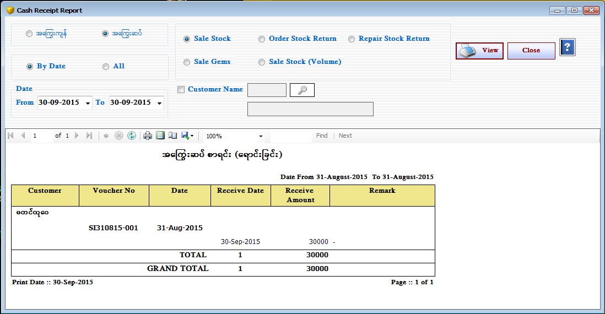
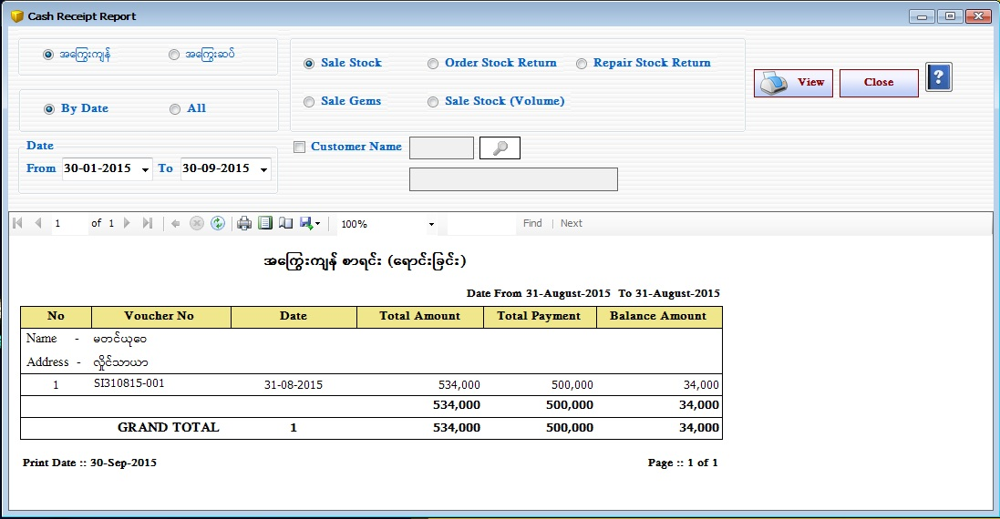

Cash Receive On Credit Setup


- Reports အောက်ရှိ Cash Receipt On Credit From ကိုဖွင့်ပါ။
- Cash Receipt On Credit သည် ကြွေးကျန်စာရင်း နှင့် ကြွေးဆပ်စာရင်းကို ကြည့်ရှုနိုင်သည်။ အကြွေးကျန်စာရင်းကို ကြည့်လိုပါက အကြွေးကျန် ကို on ထားပြီး Sale Stock, Order Stock Return, Repair Stock Return, Sale Gems, Sale Stock (Volume) တို့မှ မိမိကြည့် လိုသော Form ကို on ထားပါ။
- ထို့နောက် မိမိကြည့်ချင်သော From Date နှင့် To Date ကိုရွေးချယ်ပေးရပါမည်။ From Date နှင့် To Date အတွင်း ရှိသော အကြွေးကျန်စာရင်းကို View Button နှိပ်၍ ကြည့်ရှုနိုင်ပါသည်။
- အကြွေးဆပ်စာရင်းကို ကြည့်ရှုလိုပါကလည်း အကြွေးဆပ် ကို on ထားပြီး Sale Stock, Order Stock Return, Repair Stock Return, Sale Gems, Sale Stock (Volume) တို့မှ မိမိကြည့် လိုသော Form ကို on ထားပါ။
- ထို့နောက် မိမိကြည့်ချင်သော From Date နှင့် To Date ကိုရွေးချယ်ပေးရပါမည်။ From Date နှင့် To Date အတွင်း ရှိသော အကြွေးဆပ်စာရင်းကို View Button နှိပ်၍ ကြည့်ရှုနိုင်ပါသည်။
- Cash Receipt On Credit အား အသုံးပြုပြီးပါက Close Button ကိုနှိပ်၍ ပိတ်နိုင်ပါသည်။